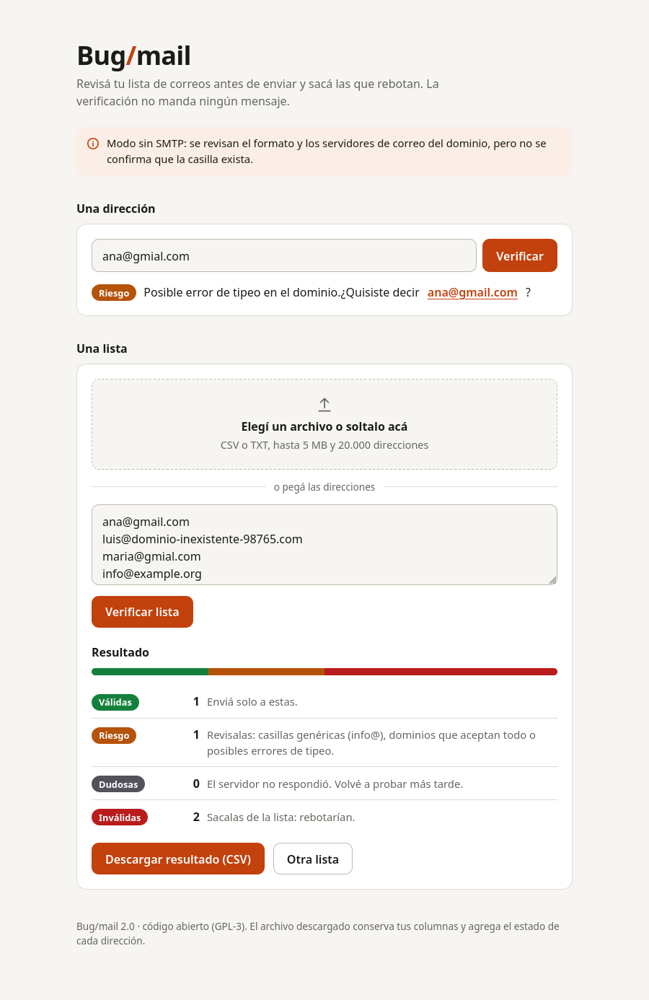
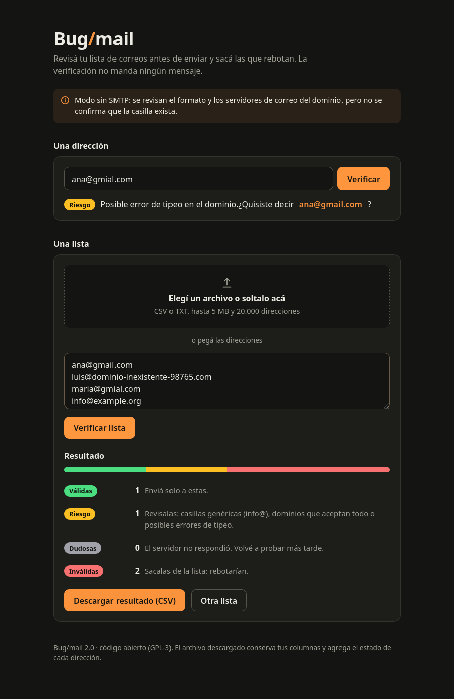

Fewer bounces, better sender reputation. Bug/mail checks every address in layers and never sends a message. Menos rebotes y mejor reputación de envío. Bug/mail revisa cada dirección por capas y nunca manda un mensaje.


Each address goes through these checks in order. Results are cached per domain and each address is only checked once.Cada dirección pasa por estos controles en orden. El resultado se guarda por dominio y cada dirección se revisa una sola vez.
ana@gmial.com is flagged with the suggestion ana@gmail.com.ana@gmial.com se marca con la sugerencia ana@gmail.com.info@ or ventas@ are marked risky.Dominios descartables y direcciones como info@ o ventas@ quedan como riesgosas.RCPT TO and stops there. Tries up to three servers.Le pregunta al servidor RCPT TO y corta ahí. Prueba hasta tres servidores.Four verdicts, one action each.Cuatro veredictos, una acción para cada uno.
Send.Enviá.
Review: role accounts, catch-all domains, possible typos.Revisá: cuentas de rol, dominios catch-all, posibles typos.
Retry later: greylisting or timeouts.Reintentá más tarde: greylisting o timeouts.
Drop it.Sacala.
Python 3.10+, with flask and dnspython. It runs on your machine: this page is only a description, there is no hosted version.Python 3.10+, con flask y dnspython. Corre en tu máquina: esta página solo lo describe, no hay versión online.
git clone https://github.com/cufadev/debuglist.io.git
cd debuglist.io
python3 -m venv .venv
.venv/bin/pip install -e .
# is outbound port 25 open from here?
bugmail doctor
# one address
bugmail check ana@example.com
# a whole list (CSV or one address per line)
bugmail file list.csv -o result.csv
# web interface at http://127.0.0.1:5000
bugmail serveThe result file keeps your columns and adds bugmail_status, bugmail_reason and bugmail_suggestion.El archivo de salida conserva tus columnas y agrega bugmail_status, bugmail_reason y bugmail_suggestion.
No verifier is exact. Read this before you trust a list.Ningún verificador es exacto. Leelo antes de confiar en una lista.
Many ISPs and clouds block it. bugmail doctor tells you; if it is blocked, run from a server where it is open or use --no-smtp.Muchos proveedores y nubes lo bloquean. bugmail doctor te avisa; si está bloqueado, corrélo desde un servidor donde esté abierto o usá --no-smtp.
Catch-all, blocked probes and greylisting end up as risky or unknown, never as a false "valid".Catch-all, sondeos bloqueados y greylisting terminan como risky o unknown, nunca como un falso "valid".
Large volumes from one IP can get it blocklisted. Keep the default spacing and trust your sending provider's bounce reports last.Volúmenes grandes desde una IP pueden hacer que la bloqueen. Mantené el espaciado por defecto y tomá como verdad final los reportes de rebote de tu proveedor de envío.
For people who gave you their address. Not for collecting or guessing other people's. Check the law that applies to you (GDPR, Ley 25.326).Para gente que te dio su dirección. No para juntar ni adivinar las de otros. Revisá la ley que te aplique (GDPR, Ley 25.326).